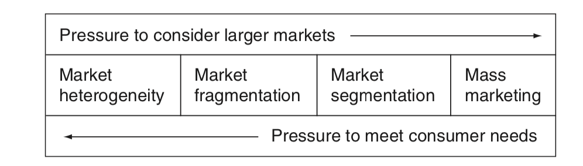

2.1 Mass marketing and market segmentation:
Heterogeneous markets:
The extreme form of market segmentation is where everyone has different needs and purchasing capability, and this is described as market heterogeneity. An example of this would be if everyone had bespoke tailoring, which, given the economics of the prospect, is an unlikely scenario. The nearest example is the market for corporate clothing. Here large organizations may require custom-made uniforms or limited ranges of clothing for their staff to enable the achievement of corporate image and personal goals. However, even within the corporate clothing market, there will be some homogeneity, with for example smaller regional and local non-competing organizations such as restaurants who are willing to accept similar garments for their staff. Security staff and cleaning personnel from many organizations may be provided with the same garments.
Market segmentation:
Market segmentation is where the larger market is heterogeneous and can be broken down into smaller units that are similar in character.
Factors influencing segmentation strategies
In practice there is always the problem of balancing the similarity of needs with the desire for substantial numbers of potential buyers.
Pressure to target more closely can lead to greater fragmentation of a market so that the overheads of promotional support and informa- tion overload for consumers can become associated with lower levels of market efficiency. An acceptable balance has been found by many firms in what is known as niche marketing, where a clearly defined segment is targeted with a narrow product range. Wolford, Tie Rack and Thomas Pink are examples of this approach. Niche marketing is just another form of market segmentation. The extreme form of meeting customers’ needs along this continuum has already been described as market het- erogeneity, where each customer is treated as being unique.
There are other pressures to aggregate consumers with needs that are ‘similar enough’, but this can lead to a situation where the result- ant marketing mix is a compromise that satisfies no one. The desire for larger markets is understandable as large markets enable economies of scale in production and marketing, and can command higher profits. The compromise solution of aggregating those who are ‘similar enough’ is vulnerable to competing businesses, who can demonstrate that they are better able to satisfy more closely targeted segments.